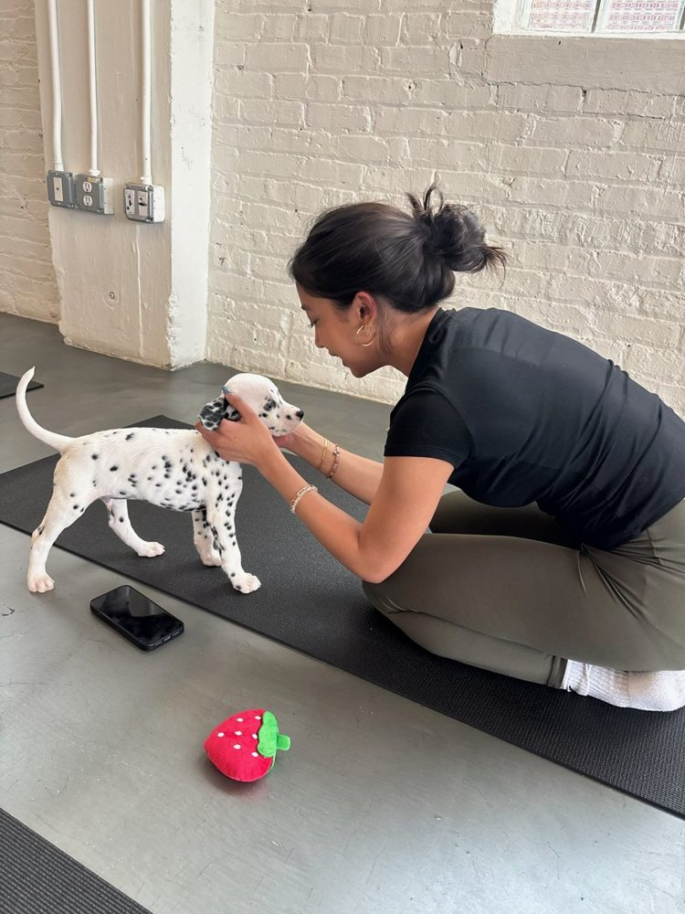
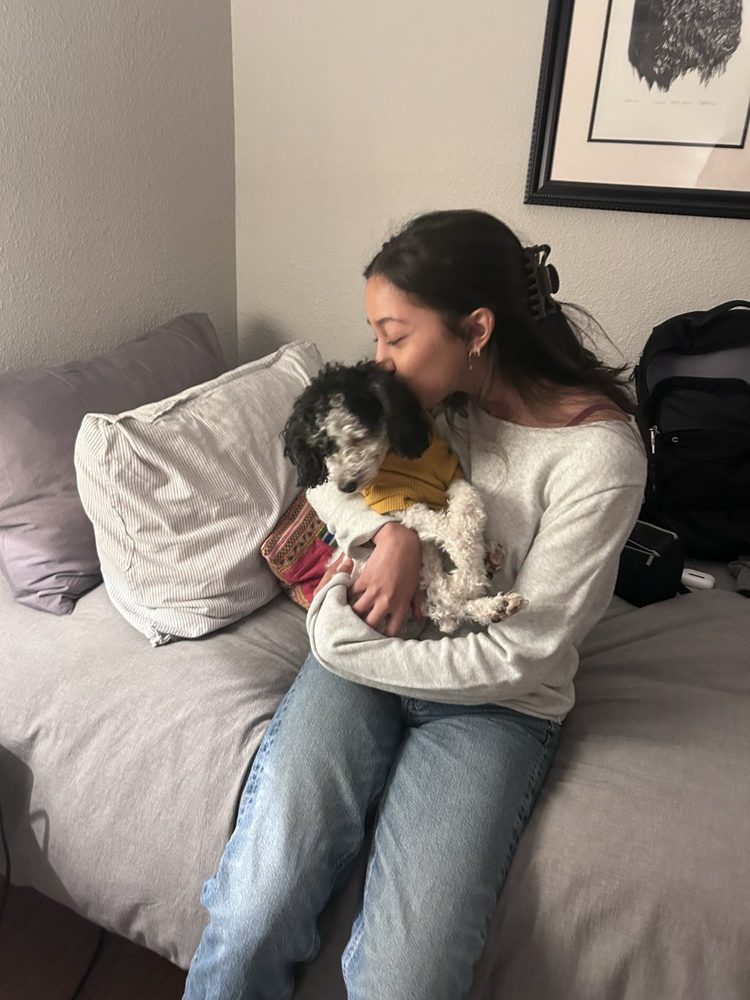
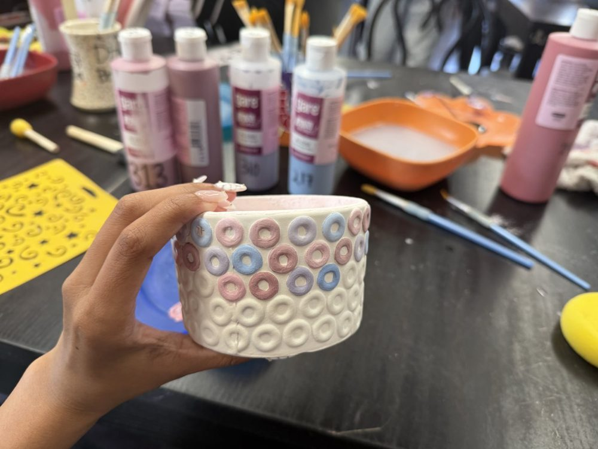
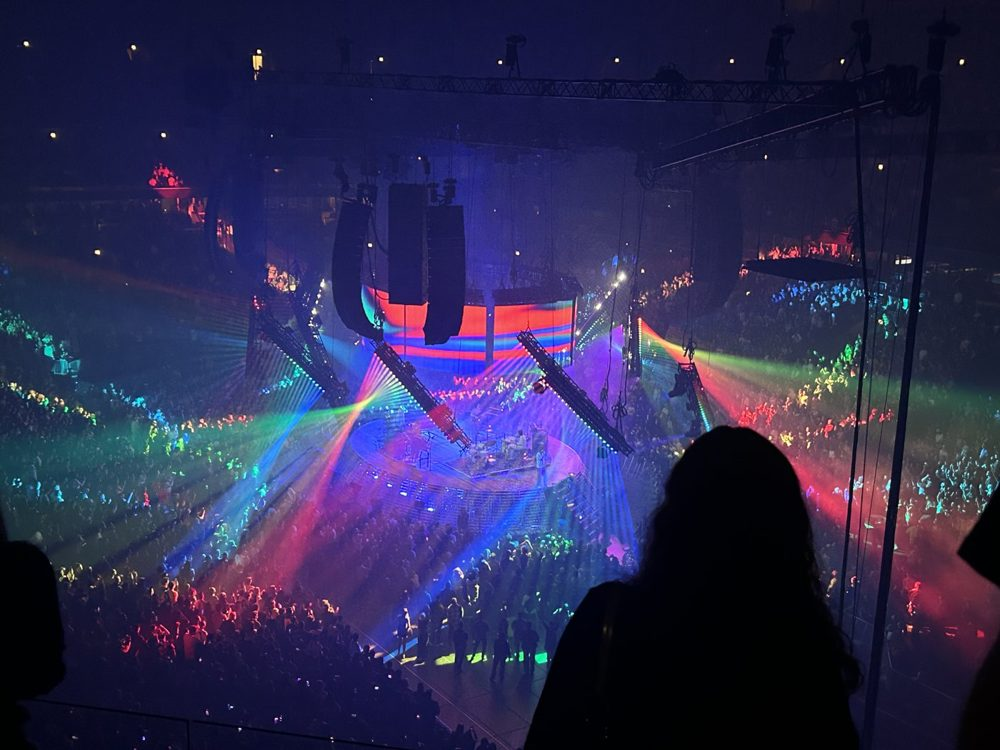

Hi, I'm Ashmi. I design interfaces around trust, human behavior, and AI systems people can rely on.
UI/UX Design student at Purdue, minoring in Computer Science and Psychology. I study how interface decisions shape trust, in autonomous vehicles, in health tools, in anything asking a person to hand over a little control.
Work
Selected projects and research
NHanCE Lab: Autonomous Vehicle Human Interface Research
An ongoing study on how elderly riders learn to trust self-driving cars when the car's confidence information is sometimes wrong. I synthesized 70+ sources and am building the real-time Python display participants will use across 3 test scenarios. The same question drives enterprise AI: when should people rely on automation, and when should they step in?
View research projectAgentic Maintenance Platform
Journey maps on a CX platform went stale with no warning. We designed an AI agent that flags outdated content with evidence, while users approve, deny, or undo every change. Testers rated tasks 3 out of 10 in difficulty across 6 usability tests, and we presented the design to the client's CEO and VP of Product. Company withheld under NDA.
View projectAzure Monitor Health Models
Engineers open Azure Health Models when something is already failing, but its health tree was hard to read under pressure. I designed the Threshold Spectrum, a gauge showing how close a resource is to failing, and mapped and tested Visibility of State. Every final feature traces back to user interviews, and the designs were handed off to Microsoft.
View projectMIC: CASA Platform Redesign
Writing a court report took volunteer child advocates far too many clicks. I wrote the testing protocol and ran sessions with 3 CASAs, from 6 months to 10 years of experience, which led to drafts and an accessibility fix for color-only buttons. I also took the homepage and report page from sketch to the final interactive prototype.
View projectAbout
A little about me
Hi, I'm Ashmi!!
I am a current junior at Purdue University studying UI/UX Design, with minors in Computer Science and Psychology.
I am passionate about designing intuitive experiences, and am constantly expanding my UX research and design knowledge.
I am super interested in designing for autonomous vehicles and device workflows, and am constantly looking for new research opportunities.
Outside of school, I love animals, art, lifting, and food. I am also very musically inclined (I can play the flute, bassoon, trumpet, and piano!), and I love live concerts (I've seen around 20 different artists), as well as teaching and working with kids.




Design is a trust negotiation, and I like sitting in the uncomfortable part of it.
Contact
Open to internships and research collaborations